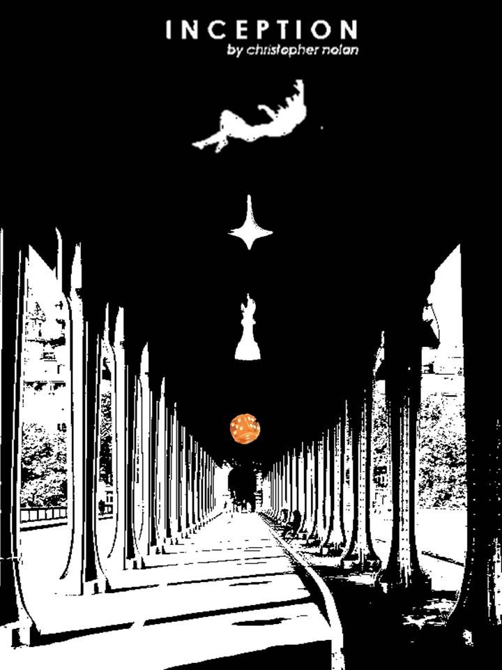
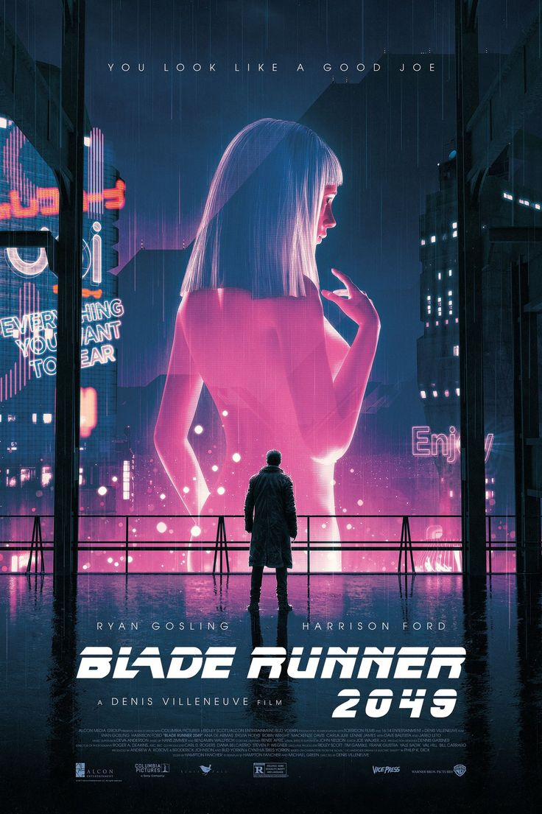
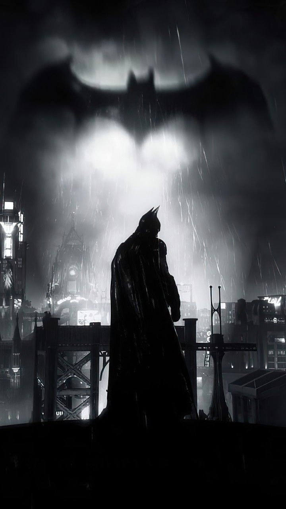
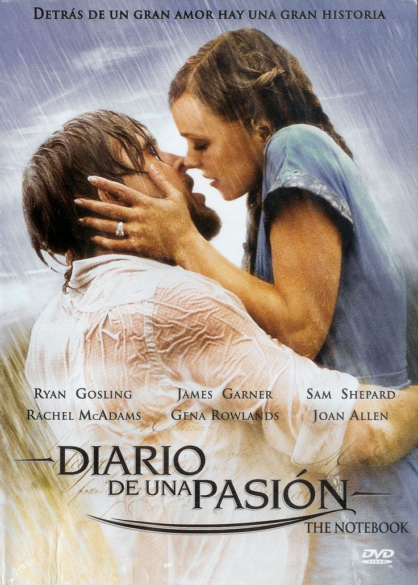

CIENCIA FICCION
Interestellar
Interestelar es una película de ciencia ficción dirigida por Christopher Nolan, estrenada en 2014. La
historia sigue a un grupo de astronautas, liderados por Cooper (interpretado por Matthew
McConaughey), que viajan a través de un agujero de gusano cerca de Saturno en busca de un nuevo
hogar para la humanidad, ya que la Tierra está en declive debido a desastres ecológicos.
A medida que Cooper y su equipo exploran nuevos planetas, enfrentan desafíos extremos, incluida la
dilatación del tiempo, lo que les obliga a tomar decisiones difíciles sobre el sacrificio y la
dilatación del tiempo, lo que les obliga a tomar decisiones difíciles sobre el sacrificio y la
conexión humana a través del tiempo y el espacio.
Inception
*Inception* es una película de ciencia ficción dirigida por Christopher Nolan y estrenada en 2010
. La trama sigue a Dom Cobb (interpretado por Leonardo DiCaprio), un ladrón especializado en robar secretos
del subconsciente de las personas a través de sus sueños. Cobb recibe la oferta de realizar una tarea inversa
llamada "inception": implantar una idea en la mente de un objetivo. La película explora complejas capas de sueños
dentro de sueños, con una narrativa que se centra en los límites entre la realidad y la ilusión, cuestionando
la naturaleza de la percepción y el tiempo. La cinta es aclamada por su narrativa innovadora y efectos visuales impresionantes.

El precio del mañana
Es una película de ciencia ficción dirigida por Andrew Niccol y estrenada en 2011. La trama se desarrolla
en un futuro distópico donde el tiempo se ha convertido en la moneda universal. A partir de los 25 años,
las personas dejan de envejecer, pero deben ganar o comprar tiempo para mantenerse con vida. La sociedad
está dividida entre ricos que viven eternamente y pobres que luchan por cada minuto.
El protagonista, Will Salas (interpretado por Justin Timberlake), vive al día hasta que inesperadamente recibe
una gran cantidad de tiempo de un desconocido. Sin embargo, esta nueva oportunidad lo convierte en el objetivo
de las autoridades y lo impulsa a desafiar el sistema corrupto. A lo largo de la historia, se cuestionan temas como la desigualdad, la mortalidad y la lucha por la libertad.
La película es conocida por su original enfoque sobre la economía del tiempo y por sus críticas a las injusticias
sociales.

The Matrix
The Matrix es una película de ciencia ficción dirigida por las hermanas Wachowski y estrenada en 1999.
La historia sigue a Neo (Keanu Reeves), un programador informático que descubre que la realidad que conoce es
una simulación creada por máquinas que controlan a la humanidad. Al unirse a un grupo de rebeldes, Neo debe
enfrentarse a poderosos enemigos y cuestionar su propia realidad mientras lucha por liberar a la humanidad
de la Matrix. La película es famosa por sus innovadores efectos especiales y su profunda exploración de la
filosofía y la naturaleza de la realidad.
Blade Runner 2049
Blade Runner 2049 es una secuela de la película clásica de 1982, dirigida por Denis Villeneuve y estrenada
en 2017. La trama sigue a K (Ryan Gosling), un blade runner que descubre un secreto que podría desatar el caos
en la sociedad. A medida que busca respuestas, K se embarca en un viaje para encontrar a Rick Deckard (Harrison
Ford), un antiguo blade runner que ha estado desaparecido durante décadas. La película es aclamada por su
impresionante cinematografía y su profunda reflexión sobre la humanidad y la identidad.

ACCIÓN
Jujutsu Kaisen 0
Jujutsu Kaisen 0 es una película de acción sobrenatural que sigue a Yuta Okkotsu, un joven que es
poseído por el espíritu de su amiga fallecida, Rika. Después de sufrir traumas, se une a la escuela de
hechicería Jujutsu para aprender a controlar su poder y combatir maldiciones. La película explora su
viaje de autodescubrimiento y la lucha contra fuerzas oscuras, ofreciendo acción intensa y una
emotiva historia de amistad y sacrificio.
Capitan América y el soldado del invierno
Capitán América: El Soldado de Invierno (2014) es una película de acción y superhéroes que sigue a
Steve Rogers, también conocido como el Capitán América, mientras se adapta a la vida moderna
después de los eventos de Los Vengadores. Junto a Natasha Romanoff (Viuda Negra), descubre una
conspiración que amenaza a S.H.I.E.L.D. y enfrenta a un misterioso enemigo conocido como el
Soldado de Invierno. A medida que se desarrolla la trama, Steve se ve obligado a cuestionar la
lealtad de aquellos en los que confía y luchar contra un pasado que no lo deja en paz. La película
combina acción emocionante con temas de espionaje y dilemas morales.
Batman Dark Knight
Batman: El caballero de la noche (2008) es una película de superhéroes dirigida por Christopher
Nolan que sigue al héroe enmascarado Batman mientras lucha contra el caos en Gotham City. La
historia se centra en la aparición del Joker, un villano anárquico que busca desestabilizar la ciudad y
desafiar la moralidad de Batman. Con la ayuda del teniente James Gordon y el fiscal de distrito
Harvey Dent, Batman intenta detener al Joker, pero sus acciones desatan una serie de eventos
trágicos que llevan a la transformación de Dent en el villano Dos Caras. La película es aclamada por
su intensa narrativa, actuaciones destacadas, especialmente la de Heath Ledger como el Joker, y su
exploración de la dualidad del bien y el mal.

Avengers: Infinity War
Avengers: Infinity War es una película de superhéroes estrenada en 2018,
dirigida por Anthony y Joe Russo. La trama sigue a los Vengadores y sus
aliados mientras intentan detener a Thanos, un poderoso villano que busca
recolectar las seis Gemas del Infinito para completar su guantelete y llevar
a cabo su plan de eliminar a la mitad de la población del universo. A medida
que los héroes se agrupan, desde Iron Man y Capitán América hasta Doctor Strange
y los Guardianes de la Galaxia, se enfrentan a desafíos titánicos y sacrificios
personales. La película es conocida por su gran escala, efectos visuales
impresionantes y un desenlace impactante que redefine el futuro del Universo
Cinematográfico de Marvel, dejando a los espectadores con una sensación
de tensión y anticipación.
Avenger: Endgame
Avengers: Endgame es la culminación de la saga del Universo Cinematográfico de Marvel,
estrenada en 2019 y dirigida por Anthony y Joe Russo. La historia sigue a los supervivientes
de la batalla contra Thanos, quienes intentan reparar el daño causado por el chasquido
del villano que eliminó a la mitad de la vida en el universo. Con la esperanza de revertir
su devastadora acción, los Vengadores, liderados por Iron Man, Capitán América,
Thor y Natasha Romanoff, idean un audaz plan para viajar en el tiempo y recolectar las Gemas
del Infinito antes de que Thanos las obtenga. A medida que enfrentan sus propios pasados
y luchan contra viejos enemigos, la película explora temas de sacrificio, redención y el poder
de la amistad. El clímax de la historia culmina en una épica batalla final que no solo determina
el destino de los héroes, sino también el futuro del universo. Endgame es aclamada por su
emotividad, acción espectacular y su capacidad para cerrar múltiples arcos narrativos,
dejando un legado duradero en el cine de superhéroes.

ROMANCE
Eterno Resplando De Una Mente Sin Recuerdos
Eterno resplandor de una mente sin recuerdos
es una película de ciencia ficción y romance dirigida por Michel Gondry y estrenada en 2004.
La trama sigue a Joel (Jim Carrey) y Clementine (Kate Winslet), una pareja que decide someterse
a un procedimiento experimental para borrar los recuerdos de su relación tras una dolorosa
ruptura. A medida que los recuerdos de Clementine desaparecen, Joel se da cuenta de que aún la ama
y lucha por aferrarse a esos momentos. La película explora temas como el amor, el dolor emocional
y la importancia de los recuerdos, con una narrativa no lineal y visualmente creativa. Es aclamada
por su enfoque único y la profundidad emocional de su historia.
Robot Dreams
Robot Dream es una película animada de 2023 ambientada en la vibrante Nueva York de los años 80.
La historia sigue a Dog, un perro solitario que anhela compañía y decide construir un amigo robot,
creando un vínculo especial que transforma su vida. Juntos, exploran la ciudad, viven aventuras y
disfrutan de los placeres simples de la vida, resaltando la alegría de la amistad. Sin embargo, su
felicidad se ve truncada cuando un viaje a la playa deja al robot oxidado y varado en la arena.
Dog se enfrenta a la dura realidad de la pérdida y la soledad, regresando a casa sin su amigo y
enfrentándose a su antigua vida, marcada por la ausencia de compañía. A través de esta travesía
emocional, *Robot Dreams* aborda temas como la soledad, la búsqueda de amistad y el dolor de la pérdida
, recordándonos que, aunque las amistades pueden ser efímeras, las experiencias compartidas y los recuerdos
perduran en nuestros corazones.
500 Días Con Ella
500 días con ella es una película de comedia romántica de 2009 dirigida por Marc Webb.
La historia sigue a Tom Hansen (Joseph Gordon-Levitt), un joven arquitecto que se enamora de Summer Finn
(Zooey Deschanel), una asistente de su oficina. La película se presenta de manera no lineal, alternando entre los
diferentes días de su relación, lo que permite al espectador ver tanto los momentos felices como los desalentadores.
Tom es un romántico empedernido que cree en el amor verdadero, mientras que Summer es más escéptica sobre las relaciones.
A medida que la historia avanza, se exploran las dinámicas de su relación, desde los momentos de felicidad y conexión hasta
las luchas y desilusiones que enfrentan. A pesar de la química entre ellos, Summer finalmente decide terminar la relación,
dejando a Tom devastado. A lo largo de la película, Tom reflexiona sobre su tiempo con Summer, lo que lo lleva a cuestionar
sus propias expectativas sobre el amor y la realidad de las relaciones. La película es conocida por su estilo visual distintivo,
su banda sonora cautivadora y su enfoque honesto sobre el amor y la desilusión. Con un final que desafía las convenciones del
romance típico, *500 días con ella* invita a los espectadores a considerar que no todas las historias de amor tienen un final feliz,
pero cada experiencia nos ayuda a crecer y aprender sobre nosotros mismos.
Bajo La Misma Estrella
Bajo la misma estrella es una película de romance y drama basada en la novela homónima de John Green,
estrenada en 2014. La historia sigue a Hazel Grace Lancaster, una adolescente que vive con cáncer,
quien asiste a un grupo de apoyo donde conoce a Augustus Waters, un joven carismático y sobreviviente
de cáncer. A medida que desarrollan una profunda conexión, Hazel y Augustus enfrentan los desafíos de
su enfermedad y el impacto del amor en sus vidas. La película explora temas de amor, pérdida y la búsqueda
de significado en medio de la adversidad, dejando una profunda reflexión sobre la vida y la muerte.
El diario de una pasión
El diario de una pasión es una película de romance dirigida por Nick Cassavetes,
estrenada en 2004. La historia narra el amor entre Noah (Ryan Gosling) y Allie (Rachel McAdams), quienes
provienen de diferentes clases sociales y deben enfrentar numerosos obstáculos en su relación. A través de
una narrativa que alterna entre el pasado y el presente, la película explora la fuerza del amor verdadero
y la memoria. Con sus emotivas actuaciones y conmovedora historia, El diario de una pasión se ha
convertido en un clásico del romance moderno.
